Free-form autonomous formation in terrain with HEAP
한줄 요약 — 17 million-point 드론 지도를 2.5D 설계로 바꾸고 material-neutral cut/fill과 HEAP의 elevation-error 기반 공격점·덤프점 선택을 실시간 연결해, 제작 중 유실 토량에 맞춰 ridgeline까지 수정하면서 S자 및 모서리 제방을 각각 0.056 m와 0.032 m 평균 surface error로 자율 시공한 cyber-physical earthmoving workflow다.
1.연구 배경 및 동기
측량-설계-시공을 순환시켜 현장 토사로 자유곡면 제방 만들기
건설업의 생산성 정체와 인력 부족을 완화하는 것 외에도 earthmoving 자동화는 현장 흙을 그대로 쓰는 material-neutral construction과 사람이 다루기 어려운 자유곡면을 가능하게 한다. 논문은 road embankment, sound barrier, river profile, avalanche·landslide·debris-flow protection으로 확장 가능한 free-form embankment를 대상으로 한다. 기존의 survey→design→fabrication 일회성 순서를 바꾸어 실제 지형이 변할 때 설계가 다시 반응하는 순환 구조가 핵심이다.
기존 planner는 평평한 바닥·고정 dump·layer cutting에 치우쳤다. 3D embankment는 cut/fill 위치와 물량 균형, 유실 토사에 따른 설계 수정, 굴착기 시점의 가림까지 다뤄야 한다. 저자들은 LiDAR drone, Rhino·Docofossor 설계, HEAP의 굴착·덤프·주행을 ROS로 묶는다.
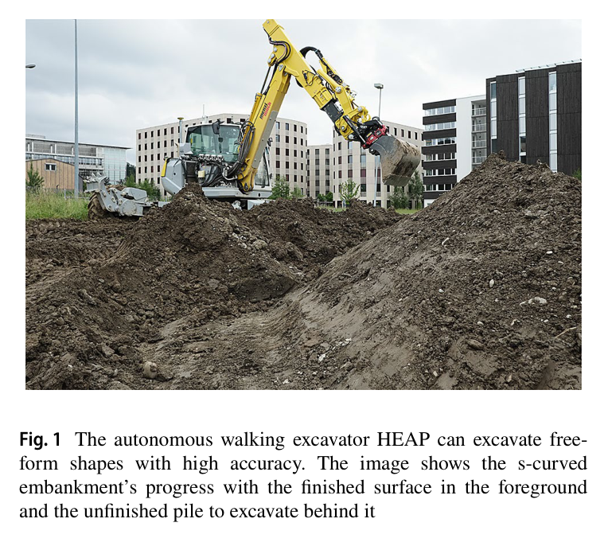
원문 Figure 1 · PDF p.3 — Fig. 1 The autonomous walking excavator HEAP can excavate free- form shapes with high accuracy. The image shows the s-curved embankment’s progress with the finished surface in the foreground and the unfinished pile to excavate behind it
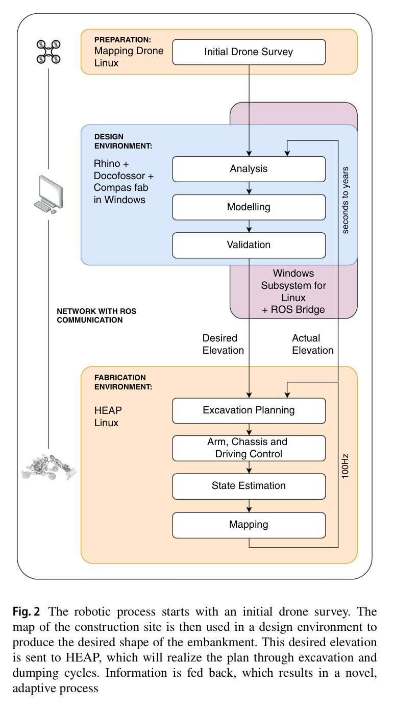
원문 Figure 2 · PDF p.3 — Fig. 2 The robotic process starts with an initial drone survey. The map of the construction site is then used in a design environment to produce the desired shape of the embankment. This desired elevation is sent to HEAP, which will realize the plan through excavation and dumping cycles. Information is fed back, which results in a novel, adaptive process
선행 연구의 한계
기존 autonomous excavation planner는 mass loading, trenching, flat-bottom layer removal 중심이고 복잡한 3D embankment의 excavation·dump 양쪽을 계획하지 않았다.
기존 free-form trench 연구는 soil을 미리 정한 곳에 버려 material-neutral fill design을 만들지 못했다.
기존 설계·제작 도구는 분리되어 site change를 시공 중 설계에 되먹임하기 어렵고 축소 실험은 대형 자연 토사를 다루지 않았다.
굴착기 onboard sensor만으로는 제방 뒤쪽 등 occlusion이 생겨 전체 site progress와 design adaptation을 놓칠 수 있다.
이 연구의 기여
DJI M210 RTK에 Ouster OS1·IMU·Jetson TX2를 통합한 mapping drone으로 construction site 전역 point cloud와 elevation map을 생성했다.
actual-desired elevation error와 progression plane으로 3D excavation point를 고르고, missing-volume·distance·height로 dump point를 찾는 iterative planner를 제안했다.
HEAP의 굴착·grading·주행을 설계와 연결하고 20 m S자 및 모서리 제방에서 시공 중 volume loss 대응과 정량 오차를 검증했다.
2.방법론 및 시스템 구성
workflow는 initial survey, design, fabrication 세 부분이다. drone이 RTK world frame의 3D point cloud를 수집하고 grid_map_pcl로 2.5D elevation을 만든다. Windows Rhino의 Docofossor가 distance function으로 swale·front/back face를 만들고 cut/fill, slope, swell을 맞춘다. desired elevation과 design line은 ROS bridge로 Linux HEAP에 전달되고, HEAP는 현재 elevation을 100 Hz control 내부에서 갱신해 design으로 되돌린다.
roof LiDAR와 bucket trace로 현재 지형을 갱신하고 elevation error의 largest blob에서 높이·progression score로 공격점을 고른다. negative error에서는 0.1 m³ 미만 blob을 제외하고 낮고 가까운 dump점을 택한다. reach 밖이면 offset path를 주행하며 SDF·SQP arm path와 후속 grading으로 오차를 줄인다.
처리 파이프라인
1
RTK-LiDAR initial survey
DJI M210 RTK의 IMU·GNSS·visual odometry·barometer state와 Ouster scan을 기록한다. lidar_align으로 매 recording의 sensor transform과 time offset을 추정하고 17 million-point cloud를 2.5D grid로 변환한다.
2
parametric terrain design
Rhino·Grasshopper의 Docofossor distance function이 input curve 주위 swale와 embankment를 만들고 sine amplitude·length로 3D width·height를 조정한다. slope, swell 1.05, cut/fill volume을 반영한다.
3
현재 지형 갱신
roof LiDAR와 bucket-edge trajectory를 융합해 falling soil·self-perception을 처리한 elevation map을 만든다. GNSS-RTK state estimation으로 drone map과 excavator를 같은 world frame에 둔다.
4
공격점 선택
positive error threshold 뒤 가장 큰 blob만 남기고 terrain height와 3D progression plane score가 최대인 cell을 공격점으로 정한다. 큰 pile을 연속 처리해 불필요한 driving을 줄인다.
5
덤프점 선택
negative error candidate 중 0.1 m³ 미만 blob을 제거하고 bucket과 가까우며 낮은 cell을 고른다. material-neutral design의 부족 토량을 채운 뒤 다시 excavation해 오차를 줄인다.
6
주행·설계 적응
reach 밖은 pure pursuit로 이동하고, soil loss가 생기면 기능면을 유지한 채 ridgeline을 낮춰 volume을 재균형한다.
원문 수식과 의미
고도 오차
Z_e=Z_{act}-Z_{des}
현재와 목표 elevation의 cell-wise 차이로 positive는 cut candidate, negative는 fill candidate가 된다.
작은 volume blob을 제거하고 낮으며 bucket에 가까운 missing-soil cell을 선택한다.
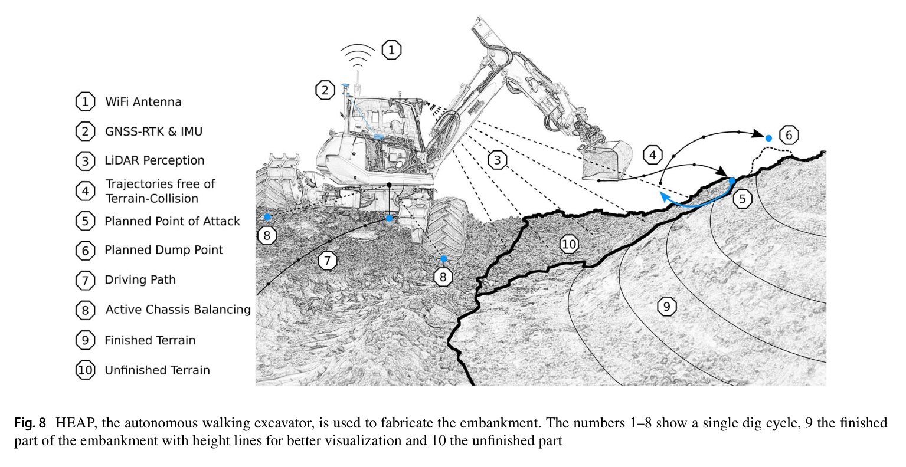
원문 Figure 8 · PDF p.7 — Fig. 8 HEAP, the autonomous walking excavator, is used to fabricate the embankment. The numbers 1–8 show a single dig cycle, 9 the finished part of the embankment with height lines for better visualization and 10 the unfinished part
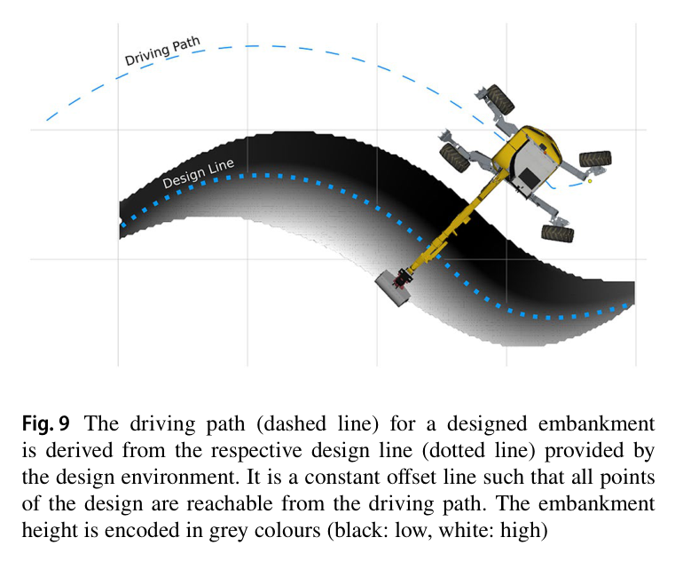
원문 Figure 9 · PDF p.7 — Fig. 9 The driving path (dashed line) for a designed embankment is derived from the respective design line (dotted line) provided by the design environment. It is a constant offset line such that all points of the design are reachable from the driving path. The embankment height is encoded in grey colours (black: low, white: high)
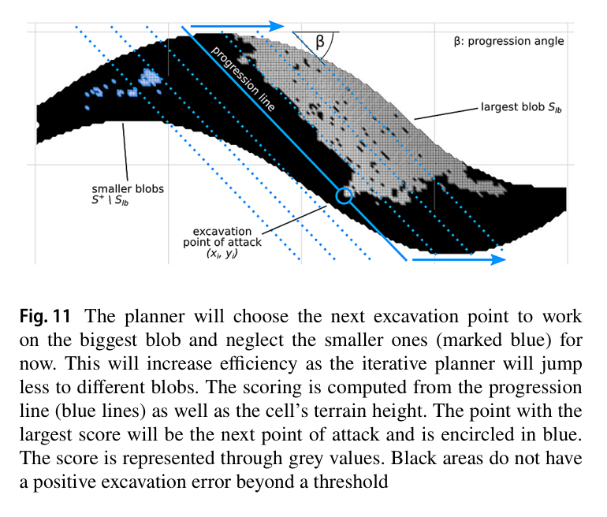
원문 Figure 11 · PDF p.8 — Fig. 11 The planner will choose the next excavation point to work on the biggest blob and neglect the smaller ones (marked blue) for now. This will increase efficiency as the iterative planner will jump less to different blobs. The scoring is computed from the progression line (blue lines) as well as the cell’s terrain height. The point with the largest score will be the next point of attack and is encircled in blue. The score is represented through grey values. Black areas do not have a positive excavation error beyond a threshold
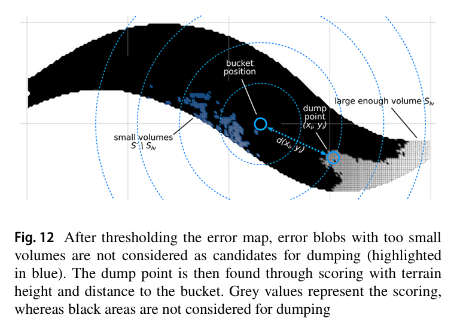
원문 Figure 12 · PDF p.9 — Fig. 12 After thresholding the error map, error blobs with too small volumes are not considered as candidates for dumping (highlighted in blue). The dump point is then found through scoring with terrain height and distance to the bucket. Grey values represent the scoring, whereas black areas are not considered for dumping
Docofossor는 grid elevation을 distance로 삼아 curve·slope·sine parameter의 swale와 embankment를 만든다. cut/fill·swell을 묶어 S자 실험의 soil loss 때 기능면을 유지하고 ridgeline만 낮췄다.
Rhino+Docofossor+COMPAS FAB
cut/fill balance와 1.05 swell factor
fabrication feedback에 따른 on-the-fly redesign
largest-blob progression excavation planner
OpenCV contour의 largest error blob에서 terrain height와 progression plane을 합쳐 공격점을 고른다. design line 직교 작업방향은 flat edge를 break line에 맞추며 offset driving path가 20 m 곡선의 reach를 확보한다.
positive error threshold
largest connected blob selection
terrain height+progression plane score
design-line orthogonal working direction
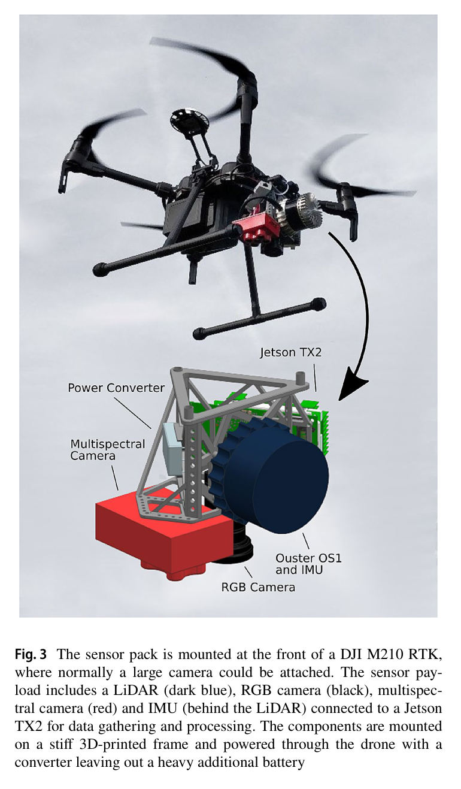
원문 Figure 3 · PDF p.4 — Fig. 3 The sensor pack is mounted at the front of a DJI M210 RTK, where normally a large camera could be attached. The sensor pay- load includes a LiDAR (dark blue), RGB camera (black), multispec- tral camera (red) and IMU (behind the LiDAR) connected to a Jetson TX2 for data gathering and processing. The components are mounted on a stiff 3D-printed frame and powered through the drone with a converter leaving out a heavy additional battery
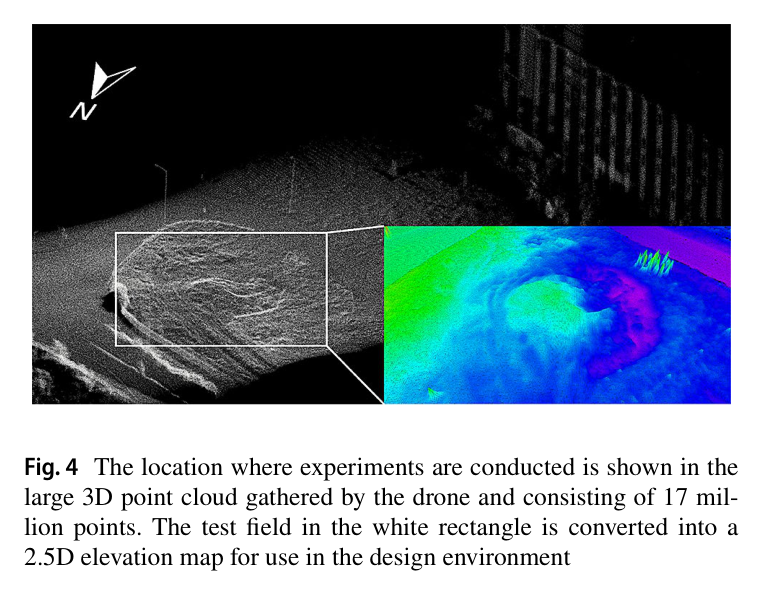
원문 Figure 4 · PDF p.5 — Fig. 4 The location where experiments are conducted is shown in the large 3D point cloud gathered by the drone and consisting of 17 mil- lion points. The test field in the white rectangle is converted into a 2.5D elevation map for use in the design environment
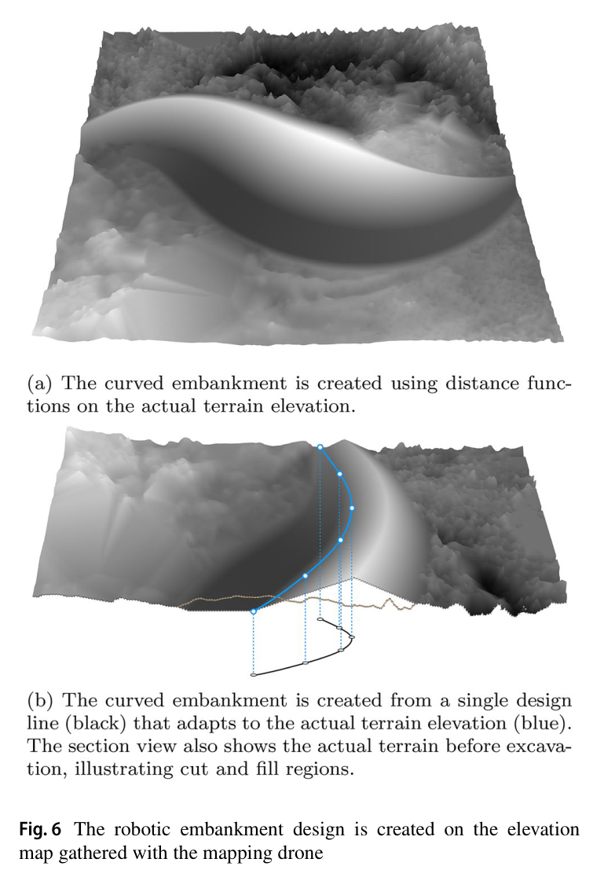
원문 Figure 6 · PDF p.6 — Fig. 6 The robotic embankment design is created on the elevation map gathered with the mapping drone
4.실험 결과
실험 환경·장비·데이터
첫 실험은 clay-rich field에서 slope 33.7°, displacement target 30 m³의 20 m S-shaped embankment와 swale를 만든다.
survey drone, Rhino-Docofossor design environment, WiFi/ROS network, HEAP 12 t walking excavator와 onboard Velodyne VLP-16·Robosense RS-Bpearl을 사용한다.
두 번째 실험은 Blender CAD로 만든 two-faced embankment with corner이며 loose truck-dumped soil에서 high-precision servo 대신 pilot-stage main valve와 빠른 grading을 사용한다.
실험 프로토콜
drone initial map으로 material-balanced design을 만든 후 north concave에서 south tight convex 순으로 HEAP가 excavation·dump cycle을 반복한다.
제작 약 2/3 시점에 swale excavation 중 lost soil을 보상하기 위해 front function을 유지하고 ridgeline을 낮춰 cut/fill을 재균형한다.
완성 후 actual-desired surface의 normal-direction cell distance를 계산한다. 두 번째 제방은 plan을 바꿔 두 면을 만들고 인위적 파손 뒤 자율 복원한다.
비교 기준
직접 알고리즘 baseline은 없다.
이전 free-form trench 결과 평균 0.027 m와 0.024 m가 단순 형상 정밀도 reference로 언급된다.
논문은 6 h/30 m³ 생산성이 human operator보다 낮다고 정성 비교한다.
평가 지표
surface-normal cell 평균 오차
cut·fill volume과 operation time
설계 수정 전후 volume balance
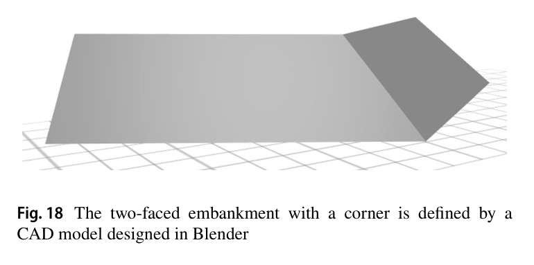
원문 Figure 18 · PDF p.11 — Fig. 18 The two-faced embankment with a corner is defined by a CAD model designed in Blender
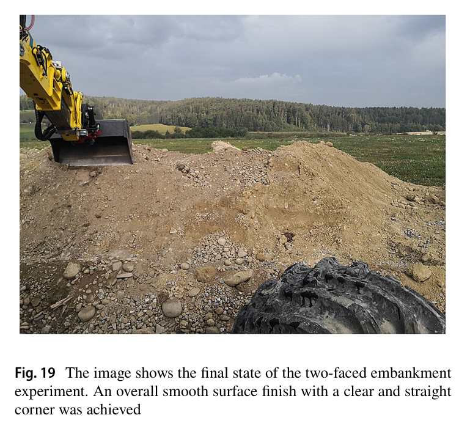
원문 Figure 19 · PDF p.12 — Fig. 19 The image shows the final state of the two-faced embankment experiment. An overall smooth surface finish with a clear and straight corner was achieved
핵심 결과 해석
S자 제방은 6 h machine operation 동안 30.60 m³를 cut하고 32.20 m³를 fill했다. clay-rich soil과 swale의 hard compacted soil·small stone 변화를 force digging이 처리했다. 북쪽 완만한 concave 부분의 평균 cell error는 0.038 m였고, flat bucket으로 tight convex를 만드는 남쪽까지 포함한 전체는 0.056 m였다. 이는 이전 단순 trench 0.027·0.024 m보다 어렵지만 20 m 자유곡면의 smooth finish와 curvature를 완성한 결과다.
bucket closing 때 soil이 기계 아래로 밀려 fill이 부족해지자 공정 약 2/3에 swale와 front slope를 유지하고 ridgeline을 낮췄다. 설계 feedback이 실제 material uncertainty를 흡수한 사례다.
두 면·모서리 제방은 평균 error 0.032 m를 달성하고 smooth surface와 clear straight corner를 보였다. 사람이 완성 구조를 무너뜨린 뒤 planner가 다시 missing/excess soil을 찾아 복구할 수 있었다. 반면 conclusion은 20 m·약 30 m³를 6 h에 처리한 productivity가 사람보다 훨씬 낮다고 명시하며, 정밀도와 설계 자유도를 얻었지만 현장 경제성은 아직 확보되지 않았음을 인정한다.
정량 결과
평가 항목
정량 결과
조건·맥락
원문 근거
S자 제방 공정
6 h, cut 30.60 m³, fill 32.20 m³
20 m long, design displacement 30 m³, swell factor 1.05
PDF p.10
S자 concave 구간 평균 오차
0.038 m
북쪽 완만한 곡률 구간의 cell normal-direction error
PDF p.10
S자 전체 평균 오차
0.056 m
tight convex south section 포함
PDF p.10
two-faced corner 제방 평균 오차
0.032 m
loose dumped soil, 두 CAD plan 순차 실행
PDF p.11
drone map 규모
17 million points
초기 construction site 3D point cloud
PDF p.5
실패 사례와 경계조건
soil이 기계 쪽으로 밀려 fill volume이 부족해졌다.
tight convex는 flat edge reach가 어려워 전체 오차를 0.056 m로 높였다.
굴착기 가림을 초기 수동 drone survey가 시공 중 보완하지 못했다.
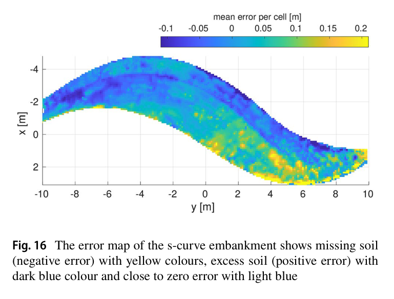
원문 Figure 16 · PDF p.11 — Fig. 16 The error map of the s-curve embankment shows missing soil (negative error) with yellow colours, excess soil (positive error) with dark blue colour and close to zero error with light blue
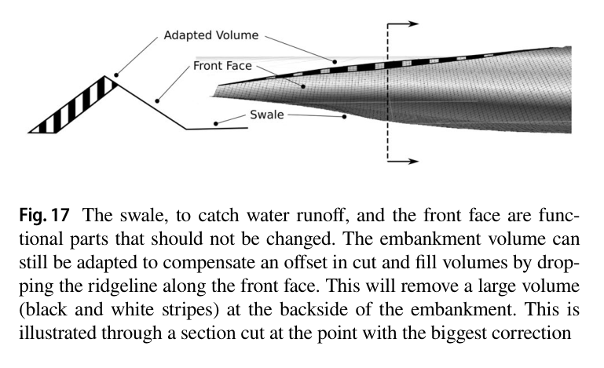
원문 Figure 17 · PDF p.11 — Fig. 17 The swale, to catch water runoff, and the front face are func- tional parts that should not be changed. The embankment volume can still be adapted to compensate an offset in cut and fill volumes by drop- ping the ridgeline along the front face. This will remove a large volume (black and white stripes) at the backside of the embankment. This is illustrated through a section cut at the point with the biggest correction
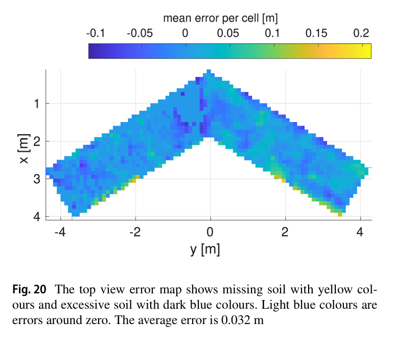
원문 Figure 20 · PDF p.12 — Fig. 20 The top view error map shows missing soil with yellow col- ours and excessive soil with dark blue colours. Light blue colours are errors around zero. The average error is 0.032 m
5.한계 및 향후 연구
현재 한계
20 m S자 제방에 6 h가 걸려 인간 earthmoving operator의 생산성보다 현저히 낮다.
단일 HEAP와 두 prototype geometry, 제한된 clay-rich·loose soil에서만 검증되어 대규모 site와 다양한 material의 일반성이 없다.
planner는 greedy이고 drone은 초기 수동·offline survey에 그치며 2.5D는 다층 토질을 표현하지 못한다.
향후 연구
excavation·dump cycle speed, grading speed, driving schedule을 최적화해 사람과 경쟁 가능한 throughput으로 높인다.
fabrication 중 drone을 자동 재배치해 가림을 보완하고 soil composition을 design feedback에 넣는다.
multi-machine material flow와 multi-cycle chassis·surface convergence를 공동 계획한다.
6.한마디로 정리
핵심 방법은?
RTK-LiDAR survey, material-balanced parametric terrain design, HEAP의 error-map 기반 excavation·dump를 폐루프로 연결한다.
핵심 결과는?
20 m S자 제방을 평균 0.056 m, two-faced corner를 0.032 m error로 완성하고 공정 중 soil loss에 맞춰 설계도 수정했다.
한계는?
약 30 m³에 6 h로 생산성이 낮고 단일 장비·2.5D·greedy planning 및 초기 drone survey에 머문다.
#시스템통합·현장실증#작업·궤적계획#측위·매핑#드론 측량#재료중립 설계#고도 오차 폐루프
나의 의견 / 우리 연구와의 연관성
자율굴착을 current terrain을 desired geometry로 바꾸는 반복 feedback으로 정의한다. 같은 elevation error로 공격·덤프·grading을 연결하고, material loss에는 기능면을 유지한 설계 수정으로 대응한다.
actual-desired elevation error를 excavation·dump·grading의 공통 task state로 사용하면 여러 토공 형상을 같은 planner로 다룰 수 있다.
largest-blob와 progression plane은 잔오차를 쫓는 장비 이동을 줄이는 간단한 online regularization으로 활용 가능하다.
cut/fill-balanced design과 dump planner를 결합하면 truck 반출입을 줄이고 현장 토사 재사용률을 높일 수 있다.
soil loss 때 기능 geometry는 고정하고 비기능 geometry를 수정하는 design-level recovery를 적용할 수 있다.
7.전체 그림·표
본문 핵심 위치에 배치하지 않은 원문 Figure와 Table을 원문 페이지 순서로 수록한다.
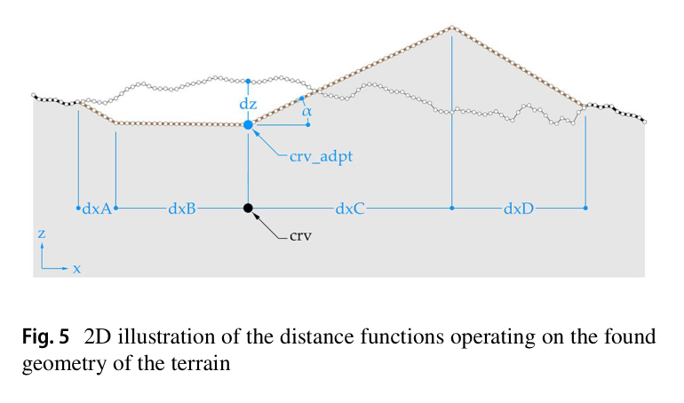
원문 Figure 5 · PDF p.5 — Fig. 5 2D illustration of the distance functions operating on the found geometry of the terrain
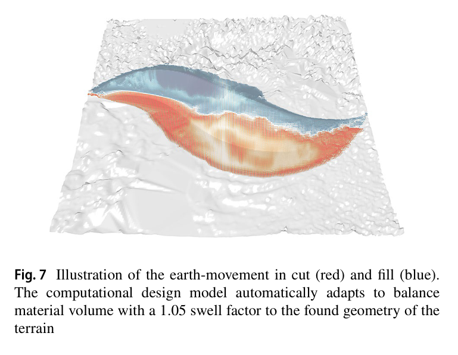
원문 Figure 7 · PDF p.6 — Fig. 7 Illustration of the earth-movement in cut (red) and fill (blue). The computational design model automatically adapts to balance material volume with a 1.05 swell factor to the found geometry of the terrain
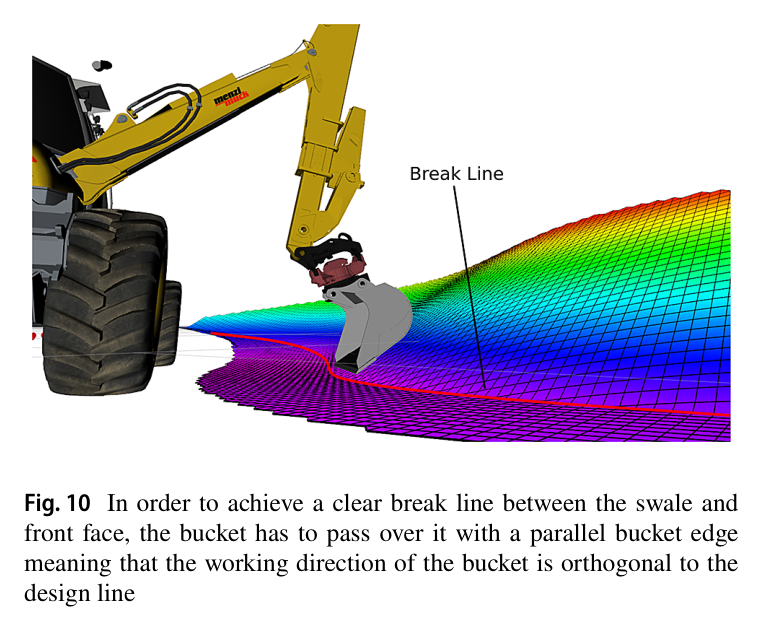
원문 Figure 10 · PDF p.8 — Fig. 10 In order to achieve a clear break line between the swale and front face, the bucket has to pass over it with a parallel bucket edge meaning that the working direction of the bucket is orthogonal to the design line
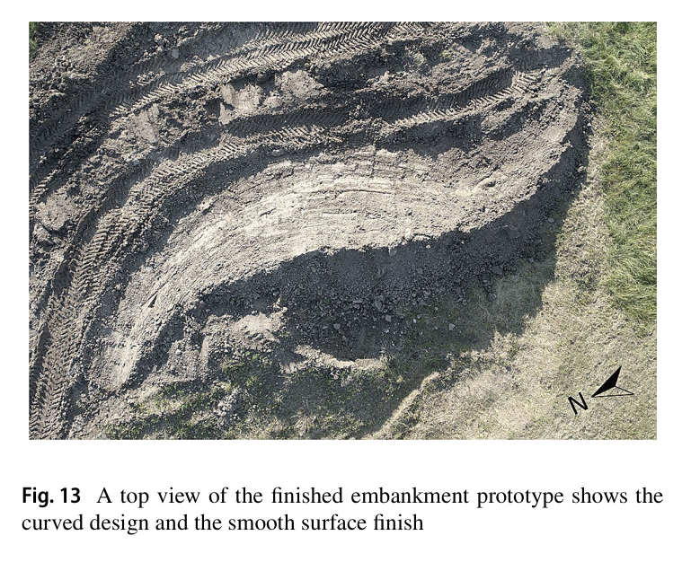
원문 Figure 13A · PDF p.10 — Fig. 13 A top view of the finished embankment prototype shows the curved design and the smooth surface finish
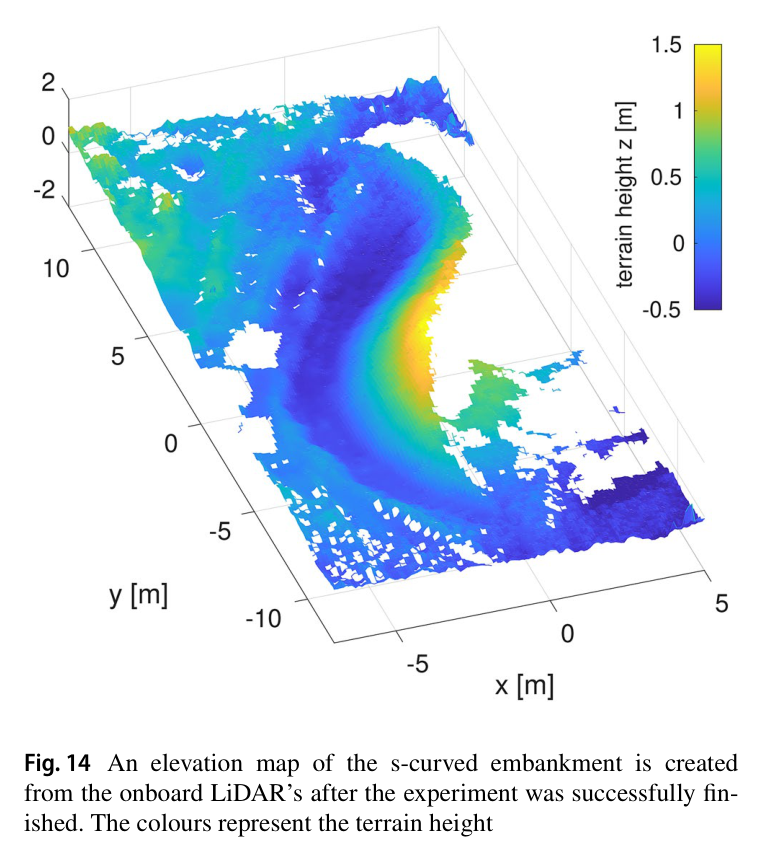
원문 Figure 14 · PDF p.10 — Fig. 14 An elevation map of the s-curved embankment is created from the onboard LiDAR’s after the experiment was successfully fin- ished. The colours represent the terrain height
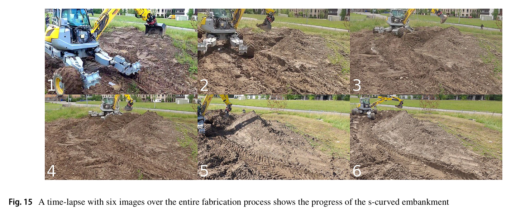
원문 Figure 15A · PDF p.11 — Fig. 15 A time-lapse with six images over the entire fabrication process shows the progress of the s-curved embankment